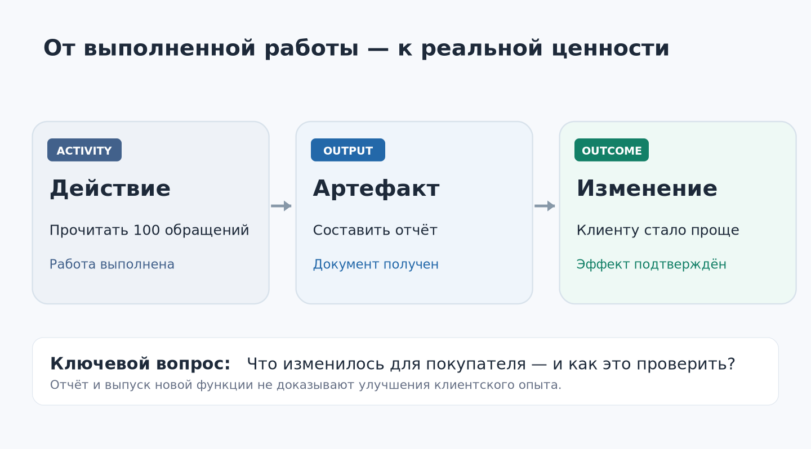
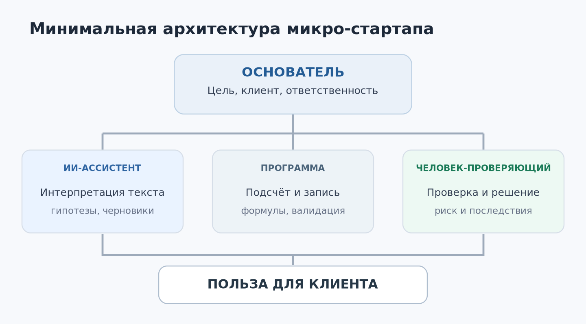
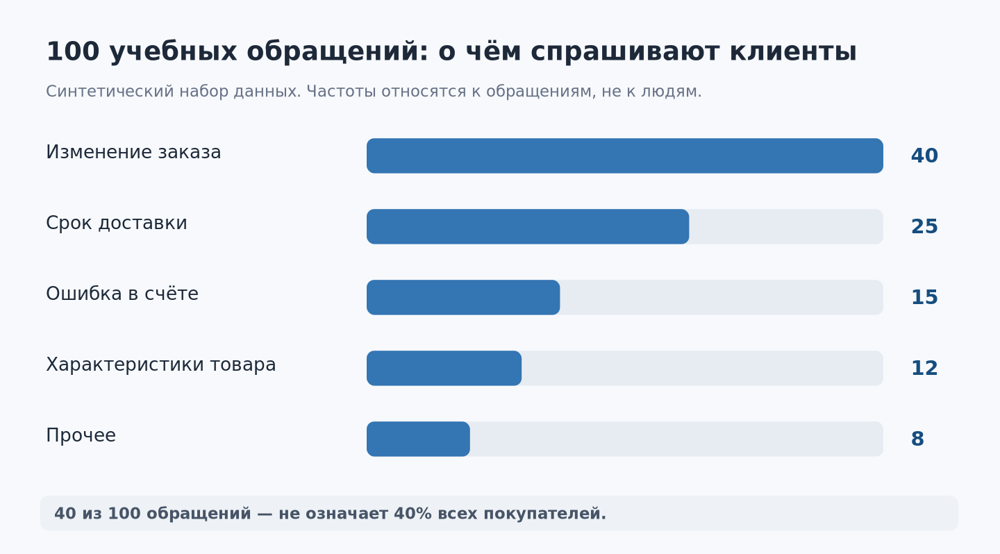

Урок 01. Компания из одного человека и команды ИИ¶
- Урок
- 01 из 12 ·
ANS.L01 - Редакция
r0001— техническая редакция для проверки · commit6d5747a7e564- Статус
- на редакционной проверкеоткрыт для замечанийпедагогический пилот не проведён
- Технологическая часть
- дата сведений — по паспорту урока ниже; в реестре 11 утвержд., сверка с источниками в S0 не выполнялась (UNVERIFIED)
Курс: AI-Native Startup — от проблемы клиента до работающего сервиса
Неделя: 1 · Занятие: 1 из 12
Версия: 1.0 · Дата редакции: 14 октября 2026 года
Время занятия: 100 минут · Самостоятельная работа: 30–45 минут
Для кого: будущие основатели небольших IT-стартапов, специалисты и студенты, уверенно пользующиеся компьютером
Не требуется: опыт программирования или платная подписка на конкретный ИИ-сервис
Главный вопрос урока: не «Сколько работы может выполнить искусственный интеллект?», а «Какой полезный результат мы хотим получить для клиента — и какой самый короткий надёжный путь к нему?»
Чему вы научитесь¶
После урока вы сможете: отличать действие, сделанный артефакт и изменение для клиента; объяснять, что такое AI-native организация; представить бизнес как рабочий поток (workflow); выбирать, что оставить человеку, поручить ИИ или автоматизировать обычным кодом; определить проверяемый результат; оформить исходную гипотезу своего стартапа в три рабочих файла.
На протяжении шести недель у каждого участника будет один сквозной проект. На первом занятии мы ещё ничего не запускаем на рынок и не подключаем настоящие клиентские переписки. Мы учимся правильно определять работу, которую вообще стоит выполнять.
1. Знакомая ситуация: «Мы очень заняты, но что изменилось?»¶
Вообразите маленькую команду. Ирина хорошо понимает рынок: много общается с клиентами, замечает, что им неудобно пользоваться существующими сервисами. Максим умеет проектировать программы. Вместе они решили открыть IT-стартап.
В первый понедельник они распределили задачи. Максим создаёт сайт, логотип и аккаунты в соцсетях. Ирина анализирует конкурентов, пишет длинный бизнес-план, составляет таблицу из пятидесяти будущих функций. На помощь им приходят ИИ-ассистенты: за пару дней готовы сотни строк кода, рекламные тексты, десятки картинок, презентация для инвестора.
В пятницу команда с удовлетворением подводит итог. Сделано очень много.
Но попробуйте задать один вопрос:
Какую конкретную проблему клиента они теперь решают лучше, чем в понедельник?
Возможно, никакую. Ни с одним потенциальным покупателем ещё не поговорили. Никто не проверил, за что люди готовы платить. В этом заключается ловушка современной ИИ-разработки: производство артефактов стало дешевле, а проверка необходимости этих артефактов всё ещё требует внимания и контакта с реальностью.
Илья Красинский в исходной лекции неоднократно показывает похожие ситуации. Его тезис: количество функций, документов, совещаний и завершённых задач не следует путать с бизнес-результатом. Особенно легко совершить эту ошибку, когда ИИ способен быстро произвести много убедительно выглядящих материалов.

Три разных уровня работы¶
Предположим, основатель говорит: «За неделю мы проанализировали сто обращений в поддержку». Разложим это утверждение.
| Уровень | Что произошло | Как можно проверить |
|---|---|---|
| Activity — деятельность | Сотрудник или агент прочитал и классифицировал обращения | Есть журнал выполнения анализа |
| Output — продукт работы | Получен отчёт с пятью типовыми проблемами | Файл существует, данные и классификация проверены |
| Outcome — полезное изменение | Устранена ошибка заказа; покупатели реже нуждаются в помощи, не теряя возможности купить | Метрики и реальные клиентские сценарии после изменения подтверждают эффект |
Первые два уровня находятся почти полностью под нашим контролем. С третьим сложнее. Действительно ли исправление облегчило жизнь покупателя? Не привело ли оно к другой ошибке? Может быть, люди перестали писать в поддержку потому, что теперь вообще не могут закончить покупку?
Результат нельзя объявить достигнутым только потому, что ИИ сообщил «готово».
Именно поэтому в нашем курсе каждый практический проект будет развиваться по цепочке:
Гипотеза → действие → артефакт → проверка → изменение для клиента → новое решение.
Запомните: сделанный продукт — необходимое достижение, но ещё не доказательство его полезности.
Маленькое упражнение¶
Подумайте, что из следующего является «output», а что — «outcome»:
- Агент написал двадцать рекламных объявлений.
- После эксперимента стало больше квалифицированных заявок при сопоставимых расходах.
- Программист исправил ошибку в форме оплаты.
- Доля покупателей, успешно завершивших оплату, выросла, а число связанных жалоб не увеличилось.
Ответы: 1 и 3 — output; 2 и 4 — признаки outcome, если измерения корректны и изменения можно обоснованно связать с вмешательством. Утверждать причинность только по факту роста показателя нельзя.
2. Что означает «компания, построенная вокруг ИИ»¶
Термин AI-native не означает, что в компании нет людей. Он означает, что при проектировании работы мы сразу учитываем возможности и ограничения ИИ, вместо того чтобы добавить чат-бота сбоку к старым процедурам.
В обычной организации задача может проходить через несколько отделов: менеджер пишет техническое задание, дизайнер рисует макет, разработчик создаёт программу, аналитик объясняет показатели, редактор пишет сообщение клиенту.
В микро-стартапе из одного-двух человек такого штата просто нет. Основатель вынужден совмещать роли. Теперь часть рутинных и исследовательских операций может выполнять программная система, использующая ИИ.
Но у человека остаются особенно важные обязанности:
- выбрать реальную проблему, достойную решения;
- установить цели и ограничения;
- законно получить необходимые данные и разрешения;
- проверять предложения ИИ и принимать решения с последствиями для клиентов;
- разговаривать с покупателями и узнавать, что происходит за пределами интерфейса;
- отвечать за качество, безопасность и финансовые обязательства.
Таким образом, основатель становится не «магом, который знает правильный промпт», а архитектором рабочей системы.
Где заканчивается чат-бот и начинается агент¶
Чат-бот отвечает на вопросы и создаёт текст. Он уже может быть полезным. Однако агентная система дополнительно использует инструменты и выполняет некоторую последовательность действий для достижения цели.
Пример без агента:
«Вот десять обращений клиентов. Раздели их по темам и сделай таблицу».
Пример агентной работы:
«Прочитай разрешённый файл обращений, проверь, что в нём нет персональных данных, сгруппируй причины, запиши таблицу в
report.csv, затем сравни итоговые суммы с исходным количеством строк и выведи список неопределённых случаев».
Во втором случае речь идёт не просто о рассуждении. Система должна иметь доступ к файлам и соответствующие инструменты. Если таких инструментов нет, она сможет только предложить инструкцию или текст результата, а не реально записать файл.
Современные агентные среды различаются интерфейсом и набором подключений; для первого урока нам достаточно понять три элемента:
- Модель — интерпретирует текст и предлагает следующее действие.
- Инструмент — выполняет конкретную операцию: читает файл, вызывает API, производит вычисление.
- Правила и проверки — определяют допустимые действия, ограничения и способ контроля результата.

На следующих занятиях мы познакомимся с Skills, памятью, агентными инструкциями, hooks, проектными стандартами и более сложной оркестрацией. Пока важно другое: наличие десяти агентов не доказывает, что они нужны.
Пример: маленькая услуга на базе ИИ¶
Представим сервис для предпринимателей: раз в неделю он анализирует клиентские обращения и помогает выявлять проблемы.
На старте вполне достаточно:
- Основатель получает данные законным способом, уточняет задачу у клиента, проверяет критические выводы и согласует рекомендации.
- ИИ-ассистент классифицирует обезличенные обращения, готовит гипотезы и черновик отчёта.
- Обычная программа или таблица считает суммы, проверяет обязательные поля, сохраняет историю измерений.
Сложный «отдел ИИ-исследований» здесь не нужен. Сначала требуется доказать, что такая услуга кому-то помогает и что её экономически возможно предоставлять.
3. Бизнес — это путь клиента, а не список функций¶
Почему клиенты покупают продукт? Обычно не из-за числа кнопок, экранов или модных технологий. Им нужно перейти из одной ситуации в другую.
Например, владелец магазина может хотеть, чтобы его покупатели меньше терялись при оформлении заказа, а менеджерам не приходилось каждый день отвечать на одинаковые вопросы.
Мы будем описывать это в духе Jobs To Be Done (JTBD): когда возникает ситуация X, человеку нужно добиться Y, потому что это поможет ему получить Z.
Для нашего примера:
Когда в интернет-магазине растёт число однотипных обращений, руководитель хочет понять реальные причины затруднений покупателей, чтобы устранить наиболее существенные проблемы и не расширять службу поддержки без необходимости.
Это ещё не подтверждённое знание о потребностях рынка. Это формулировка клиентской гипотезы, которую предстоит проверить интервью и пилотами.
Что такое workflow¶
Workflow — последовательность шагов от исходного события к результату. Важно видеть не только работу нашей программы, но и то, что происходит до и после неё.
В нашем примере:
- Клиент магазина сталкивается с затруднением.
- Обращается в поддержку — или молча отказывается от покупки.
- Магазин фиксирует обращение.
- Наш сервис анализирует обезличенный набор таких обращений.
- Руководитель изучает выводы и подтверждает проблему дополнительными данными.
- Команда магазина проверяет исправление.
- Изменение отражается или не отражается в поведении покупателей.
Заметьте: отчёт стоит лишь посередине цепочки. Хороший отчёт может ничего не изменить, если никто им не воспользуется.
Красинский показывает именно такое различие на примере клиентских звонков. В его рассказе покупатель хотел изменить несколько позиций в счёте, но не смог или не понял, как сделать это самостоятельно. Вместо вопроса «как быстрее ответить на звонок?» возникает другой: «почему человеку вообще пришлось звонить?» История служит иллюстрацией метода; в учебном наборе ниже приведены отдельно придуманные данные, а не исходная выгрузка его клиента.
Отличие причины от симптома¶
Если посетитель не может закончить оплату, система поддержки может отреагировать быстрее. Но это не обязательно устранит причину.
Возможны разные гипотезы:
- пользователь не видит кнопку подтверждения;
- форма отбрасывает корректные данные;
- платёжный провайдер возвращает ошибку;
- человек не понимает условия оплаты;
- его банк отклоняет операцию.
Для каждой гипотезы нужны свои данные и своя проверка. Чем раньше мы научимся не выдавать догадку за факт, тем меньше бессмысленной работы будем выполнять.
4. Практический кейс: сто обращений в поддержку¶
Перед нами синтетический набор из 100 учебных обращений, придуманный специально для курса. В нём нет сведений о реальных покупателях, а распределение причин выбрано авторами урока.

| Категория | Число обращений |
|---|---|
| Нельзя или непонятно как изменить заказ | 40 |
| Неизвестен срок доставки | 25 |
| Ошибка в счёте | 15 |
| Вопрос о характеристиках товара | 12 |
| Прочее | 8 |
| Всего | 100 |
Файл data/obrashcheniya_100_bez_metok.csv входит в учебный комплект: в нём 100 текстов обращений без учебных категорий. Версия с категориями (data/obrashcheniya_100.csv) находится в материалах преподавателя и служит контрольной разметкой.
Что можно утверждать по таблице¶
Мы действительно видим, что в этом учебном наборе наиболее многочисленная категория — вопросы изменения заказа. Это факт о наборе данных.
Но ещё не известно:
- сколько всего заказов было за неделю;
- по каким причинам люди не могли изменить заказ;
- сколько покупателей вообще не обращались в поддержку, а просто ушли;
- какие обращения дорого обходятся компании;
- какие сложности приводят к потере продаж;
- удалось ли устранить проблему после изменения интерфейса.
Поэтому утверждение «переделаем экран изменения заказа и улучшим выручку на 20%» пока не имеет оснований.
Три идеи решения одной проблемы¶
Вариант A — ИИ-оператор. Система автоматически отвечает на часть стандартных вопросов. Это может сократить время ожидания, но не убрать источники обращений.
Вариант B — лучшее объяснение. В интерфейсе появляется понятная инструкция и своевременное сообщение. Это может снизить число обращений, если главная трудность — недостаточная информация.
Вариант C — изменение процесса. Пользователь получает простой способ самостоятельно менять заказ без звонка. Это может дать более сильный эффект, если изменить заказ сейчас действительно невозможно или неудобно.
Что выбрать? Необходимо проверить, какая проблема существует на самом деле. Без такого исследования мы выбираем красивую идею, а не решение.
Что значит «минимальная проверк໶
Мы не обязаны сразу переписывать интернет-магазин. Можно:
- Изучить 10–15 разрешённых обращений из крупнейшей категории.
- Попросить несколько людей выполнить задачу изменения заказа в тестовой среде.
- Зафиксировать, на каком шаге они останавливаются.
- Предложить маленькое изменение интерфейса или текста.
- Сравнить успешность выполнения задачи до и после изменения.
Количество обращений тоже полезно считать, но его одного недостаточно. Если число обращений упало вместе с количеством успешных заказов, пользы клиентам не прибавилось.
5. Что именно стоит доверить искусственному интеллекту¶
Когда начинающий предприниматель видит хороший ответ ИИ, возникает соблазн поручить ему всё: проводить платежи, менять данные клиентов, отправлять сообщения, внедрять изменения в рабочую систему.
Мы будем пользоваться простой схемой выбора.
| Тип задачи | Подход для первого проекта | Почему |
|---|---|---|
| Уточнить потребность клиента в интервью | Человек, при необходимости с ИИ-подготовкой | Важны контекст, доверие, ответственность за выводы |
| Группировать учебные сообщения по смыслу | ИИ с контролем выборки | Языковая интерпретация полезна, но бывает ошибочной |
| Подсчитать суммы и доли | Детерминированная формула или код | Нужна воспроизводимая точность |
| Сгенерировать черновик предложения | ИИ и проверка человеком | Система экономит время, но может придумать факты |
| Утвердить цену и обязательства | Человек | Это коммерческое решение |
| Отправить деньги или изменить клиентские записи | Строго ограниченная автоматизация с авторизацией и подтверждением | Ошибка может быть дорогостоящей или необратимой |
Такой выбор не означает, что существуют вечные «человеческие» и «машинные» профессии. Он означает, что полномочия системы должны соответствовать цене ошибки.
Один из полезных вопросов для основателя:
Каков ущерб, если агент не просто ошибётся в тексте, а выполнит неверное действие?
Если ущерб высок, нужен более строгий контроль или человек в цепочке.
Не подменяйте выполнение задачи правдоподобным рассказом¶
Представьте: вы попросили агента «обновить таблицу». Он сообщил: «Готово, данные обновлены!»
Что нужно проверить?
- Какая именно таблица изменилась?
- Существовал ли у агента доступ к ней?
- Сколько строк было до операции и после?
- Нет ли пропущенных и дублированных записей?
- Как отменить действие, если оно оказалось неверным?
В некоторых системах агент умеет прямо вызывать инструменты и фиксировать выполненные операции; в обычном чате без подключений он может только описать, как это сделать. Слова «я обновил» без следа реального действия ничего не доказывают.
6. Первая демонстрация с ИИ: от идеи к проверяемой гипотезе¶
Теперь пора попробовать. Достаточно любого доступного ИИ-ассистента, который умеет работать с текстом. Платный аккаунт или доступ к API не обязателен.
Для безопасности возьмём только учебные агрегированные цифры, без подлинных записей клиентов.
Запрос № 1. Анализ¶
Скопируйте запрос из файла PROMPTS.md (раздел P1) или используйте этот вариант:
Ты помогаешь основателю маленького IT-стартапа.
Учебный набор: за неделю пришло 100 обращений:
40 — изменение заказа; 25 — срок доставки;
15 — ошибка в счёте; 12 — характеристики товара;
8 — прочее.
Наша цель — уменьшить ненужные обращения,
не ухудшая возможность совершить покупку.
1. Назови только факты, которые следуют из цифр.
2. Предложи три гипотезы о возможных причинах.
3. Для каждой гипотезы придумай дешёвый способ проверки.
4. Сравни: ИИ-оператор, инструкция, изменение процесса.
5. Предложи показатели успеха и показатели риска.
6. Отметь всю неизвестную информацию.
Не выдавай предположения за доказанные причины.
Ответ оформи компактной таблицей.
Имеет смысл заранее предположить, что скажет система. Какую причину вы ожидаете? Почему? А теперь прочитайте ответ ИИ.
Запрос № 2. Проверка собственных выводов¶
Проведи критическую проверку своего ответа.
Найди три вывода, которые могут оказаться неверными
при наличии дополнительных данных.
Для каждого укажи:
- какое наблюдение опровергнет вывод;
- где можно получить такие данные законно;
- как проверить гипотезу без большой разработки.
Не меняй статусы «факт», «гипотеза» и «решение» местами.
Сравните два ответа. Улучшилось ли различение подтверждённого и предполагаемого? Обнаружил ли агент пробелы, которых раньше не замечал?
Вывод: ИИ полезен не только как генератор решений. Его можно попросить выступить критиком. Но даже самокритика модели не заменяет реального эксперимента.
Запрос № 3. Переход к действию¶
Предложи один минимальный эксперимент на одну неделю.
Опиши:
- что мы изменим;
- у кого и в каких условиях;
- что считаем успехом;
- какие изменения будут тревожным сигналом;
- какие данные пока отсутствуют;
- кто должен утвердить эксперимент.
Не утверждай, что эксперимент уже проведён.
Если в ответе ИИ появятся слова «после внедрения конверсия выросла», остановитесь: эксперимент ещё не состоялся. Система, скорее всего, придумала результат.
7. Создаём схему собственного стартапа¶
Теперь перенесём логику с учебного магазина на вашу идею.
Шаг 1. Опишите клиента¶
Начните не с названия приложения и не с списка функций.
Закончите фразу:
Когда [ситуация], [тип клиента] хочет [результат], чтобы [практическая ценность].
Пример:
Когда небольшой магазин получает повторяющиеся жалобы, его владелец хочет понять, какие проблемы возникают чаще и почему, чтобы сначала исправить самое существенное, а не расширять службу поддержки вслепую.
Это рабочая формулировка. Следующее занятие научит нас проверять её на реальных людях.
Шаг 2. Опишите один полезный результат¶
Не «написать приложение с ИИ», а, например:
Владелец магазина получил проверенный отчёт о наиболее значимых затруднениях, принял решение о следующем эксперименте и понимает, по каким метрикам оценит эффект.
На первом этапе результат может достигаться частично вручную. Это нормально: мы хотим изучить проблему, а не продемонстрировать максимум автоматизации.
Шаг 3. Запишите минимальный workflow¶
Составьте 5–7 шагов от получения запроса клиента до выдачи результата. Для каждого шага запишите:
- Вход: какие данные или события нужны.
- Действие: что происходит.
- Исполнитель: человек, ИИ с проверкой или обычная программа.
- Выход: что должно появиться.
- Проверка: как понять, что этап завершён.
- Риск: что может пойти не так.
Пример: вход — обезличенные обращения; действие — тематическая классификация; исполнитель — ИИ; выход — таблица причин; проверка — сумма по группам равна числу обращений, выборочная проверка категорий; риск — ошибочная классификация неоднозначных сообщений.
Шаг 4. Уберите лишнее¶
Посмотрите на таблицу ещё раз. Возможно, вы включили подготовку логотипа, разработку кабинета администратора или систему из двенадцати агентов.
Спросите себя:
Что можно временно убрать, не мешая проверить ценность для клиента?
И второй вопрос:
Что лучше сделать один раз вручную, прежде чем тратить неделю на автоматизацию?
Одна из частых ошибок основателей — строить инфраструктуру ещё не существующей компании.
Шаг 5. Определите три показателя¶
Для первого занятия используем простую тройку:
- Ценность: достиг ли клиент своего практического результата.
- Качество: как часто исполнение оказывается неправильным или требует переделки.
- Экономика: сколько времени и денег затрачено на один подтверждённый результат.
Не пытайтесь сразу построить большой аналитический дашборд. Достаточно записать, что именно потребуется измерять.
8. Почему нельзя сразу «запустить 20 агенто⻶
В выступлениях об агентных системах часто показывают десятки параллельных исполнителей. Это впечатляет. Но маленькому стартапу дополнительный агент нужен не ради красивой архитектуры.
Каждый отдельный агент или процесс добавляет:
- собственные инструкции и рабочий контекст;
- точки передачи задач и возможной потери информации;
- стоимость вызовов модели и инструментов;
- необходимость проверять результат;
- риск ошибочного доступа к данным или выполнения действия.
Если один ассистент с доступом к нужным инструментам решает задачу правильно и надёжно, сложная оркестрация пока не нужна.
Новый агент оправдан, если он решает действительно независимую специализированную задачу, использует другой набор разрешений или его отдельная проверка заметно улучшает качество.
Минимально достаточная организация — не самая примитивная и не самая модная. Это та, где каждая часть имеет понятное назначение и измеримую цену.
9. Безопасность начинается уже в первом уроке¶
Для упражнений используйте вымышленные данные и собственные материалы. Не загружайте в публичный чат реальные переписки клиентов, медицинские данные, договоры, чужие личные сведения, пароли, ключи API и закрытые документы без соответствующих прав и разрешений.
Критические операции — денежные переводы, отправка писем реальным клиентам, удаление данных, публикация от имени компании — должны проходить с необходимой проверкой и утверждением.
Нужно помнить о двух типах ошибки:
- ошибка содержания: модель неверно объяснила ситуацию;
- ошибка действия: система неправильно изменила данные или вызвала инструмент.
Вторая обычно опаснее. Именно поэтому в курсе будут отдельные занятия по разрешениям, тестам, логам и остановке агентных процессов.
10. Что у вас должно появиться в конце урока¶
Создайте три Markdown-файла по шаблонам из папки templates/my-ai-startup/.
01_startup_hypothesis.md — кто ваш предполагаемый клиент, какую проблему он испытывает, какой результат вам кажется ценным, что пока не подтверждено.
02_workflow_map.md — 5–7 шагов работы с исполнителями, входами, выходами, проверками и рисками.
03_success_metrics.md — по одному показателю ценности, качества и экономики; для каждого — способ будущего измерения и возможное ошибочное толкование.
Не называйте их «окончательной архитектурой компании». Это версия гипотез, от которой мы будем отталкиваться. Следующий урок может заставить многое изменить — и это будет хороший результат исследования.
Самостоятельная работа¶
Составьте пять вопросов для интервью с потенциальным клиентом. Старайтесь узнать о его прошлом опыте:
- Расскажите о последнем случае, когда возникла такая проблема.
- Что вы тогда пытались сделать?
- В какой момент возникло затруднение?
- Как вы в итоге поступили?
- Чего вам стоило такое решение?
Избегайте ведущих вопросов вроде «Вы ведь купили бы нашего умного ИИ-агента?».
Проверка знаний¶
- Чем output отличается от outcome? Приведите собственный пример.
- Почему снижение числа звонков ещё не доказывает улучшения опыта покупателей?
- Что агент может сделать с файлом, если у него нет инструмента для записи?
- Почему подсчёт суммы обращений лучше выполнять формулой, а смысловую группировку — с осторожной помощью ИИ?
- Как понять, что вы строите слишком сложный процесс?
- Какую информацию нельзя передавать агенту без соответствующих разрешений?
- Какой первый реальный шаг приблизит вас к проверке идеи стартапа?
Ответы и разбор — в руководстве преподавателя.
Короткий итог¶
В начале урока Ирина и Максим старались сделать как можно больше. Но количество готовых файлов не приблизило их к знанию о клиенте.
К концу урока у вас должна появиться другая привычка: сначала выяснить проблему и желаемое изменение, затем выбрать минимальный способ действия, после чего проверить, что изменилось на самом деле.
Это важнее знания названий конкретных моделей. Инструменты будут меняться. Умение формулировать задачу, наблюдать поведение клиента, разделять факты и гипотезы и проверять последствия работы останется центральным навыком предпринимателя.
Переход к уроку 02: мы построили предположение о клиентской проблеме. Теперь необходимо узнать, существует ли она в реальной жизни, как люди с ней справляются и готовы ли за решение платить.
Примечание об источниках и степени подтверждения¶
Основано на лекции Ильи Красинского: - различение деятельности / артефакта / результата — исходная расшифровка, строки 475–480; - проблема множества функций при отсутствии полезного результата — строки 62–70; - пользователи и изменение их поведения как центральный фактор — строки 103–106; - пример обращения ради изменения счёта — строки 215–219; - переход от ускорения поддержки к поиску причины обращения — строки 222–226; - разница между подготовкой гипотез и изменением результата — строки 243–248.
Методическое расширение авторов курса: сцена Ирины и Максима, распределение обязанностей микро-стартапа, учебная классификация 100 обращений, примеры промптов, показатели качества и безопасности, логика практических файлов и оценивания. Все эти материалы созданы специально для курса, а не взяты из исходной лекции.
Внешняя проверка: подход к раннему общению с клиентами и быстрому получению обратной связи согласуется с рекомендациями Y Combinator; различение агента, инструмента, проверок и человеческих подтверждений — с современной документацией OpenAI Agents SDK; ограничения полномочий — с рекомендациями OWASP. Конкретные ссылки и даты проверок приведены в 06_ИСТОЧНИКИ_И_ОБНОВЛЕНИЯ.md.